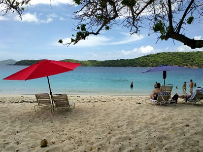
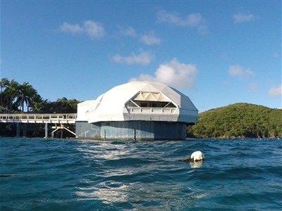
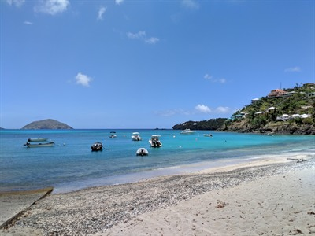
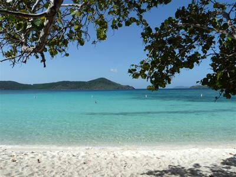
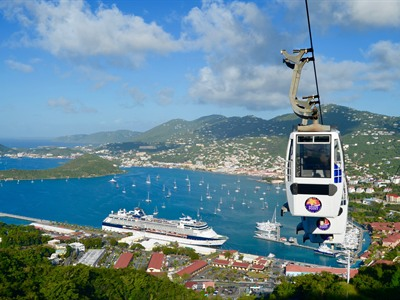

St Thomas Travel Guide
Beautiful island in the Caribbean, known for its stunning beaches, vibrant culture, and rich history
Top Locations


-400.jpg)

-400.jpg)
,_Mason_Street,_Cable-Car-Haltestelle_--_2022_--_2947-400.jpg)
Places to See in St. Thomas

Dough4872, CC BY-SA 4.0, via Wikimedia Commons; Image Size Adjusted

Blackbeard Castle
Historic tower known for pirate lore and panoramic harbor views

Dough4872, CC BY-SA 4.0, via Wikimedia Commons; Image Size Adjusted
Bluebeards Castle
Hilltop landmark offering scenic overlooks and historic charm

Dough4872, CC BY-SA 4.0, via Wikimedia Commons; Image Size Adjusted
Brewers Bay Beach
Relaxed beach with calm waters near the airport

Dough4872, CC BY-SA 4.0, via Wikimedia Commons; Image Size Adjusted
Charlotte Amalie
Historic Caribbean port known for shopping and colonial streets
Dough4872, CC BY-SA 4.0, via Wikimedia Commons; Image Size Adjusted
Charlotte Amalie Overlook
Hilltop vantage offering one of the most captivating harbor views in the USVI

Dough4872, CC BY-SA 4.0, via Wikimedia Commons; Image Size Adjusted
Coki Point Beach
Snorkeling hotspot with colorful reefs and marine life

Dough4872, CC BY-SA 4.0, via Wikimedia Commons; Image Size Adjusted
Coral World Ocean Park
Marine attraction with aquariums and interactive exhibits
Dough4872, CC BY-SA 4.0, via Wikimedia Commons; Image Size Adjusted
Dinghys Beach Bar And Grill
Laid-back beachfront bar serving food and drinks

Dough4872, CC BY-SA 4.0, via Wikimedia Commons; Image Size Adjusted
Drakes Seat
Scenic overlook offering sweeping island views
Dough4872, CC BY-SA 4.0, via Wikimedia Commons; Image Size Adjusted
Frydendal
Northeastern shoreline neighborhood blending residential calm with coastal access

Dough4872, CC BY-SA 4.0, via Wikimedia Commons; Image Size Adjusted
Hull Bay
Untamed north coast bay with a rugged character distinct from the island's calmer south

Dough4872, CC BY-SA 4.0, via Wikimedia Commons; Image Size Adjusted
Lindquist Beach
Sheltered northeastern cove regarded as one of the island's most pristine beaches
Dough4872, CC BY-SA 4.0, via Wikimedia Commons; Image Size Adjusted
Magens Bay Beach
Iconic crescent-shaped beach with calm waters
Dough4872, CC BY-SA 4.0, via Wikimedia Commons; Image Size Adjusted
Mountain Top
One of the highest accessible points with unobstructed panoramic island views
Dough4872, CC BY-SA 4.0, via Wikimedia Commons; Image Size Adjusted
Phantasea Tropical Botanical Garden
Cultivated hillside botanical garden overlooking the Caribbean Sea
Dough4872, CC BY-SA 4.0, via Wikimedia Commons; Image Size Adjusted
Red Hook
Active eastern marina hub and transportation link to nearby islands
Dough4872, CC BY-SA 4.0, via Wikimedia Commons; Image Size Adjusted
Secret Harbor Beach
Naturally protected eastern cove defined by consistently calm, clear water

Dough4872, CC BY-SA 4.0, via Wikimedia Commons; Image Size Adjusted
Skyride To Paradise Point
Aerial tram with panoramic island views
Dough4872, CC BY-SA 4.0, via Wikimedia Commons; Image Size Adjusted
Water Island
Quiet island just beyond St. Thomas harbor shaped by natural solitude
Dough4872, CC BY-SA 4.0, via Wikimedia Commons; Image Size Adjusted
Water Island Ferry
Harbor ferry connecting St. Thomas to the quiet shores of Water Island
Dough4872, CC BY-SA 4.0, via Wikimedia Commons; Image Size Adjusted
Yacht Haven Grande
Luxury marina featuring shopping, dining, and yachts
Overview
Crowned by green hills and ringed by luminous class="bold">St. Thomas rises from the Caribbean as a meeting point of deep harbors, coral reefs, and layered histories. Trade winds cool beaches where turquoise water fades into deep cobalt, while ridgelines open to sweeping views across island-dotted horizons. Natural harbors such as Charlotte Amalie have long anchored the island’s role as a maritime crossroads, linking sea lanes, cultures, and commerce.
The island’s past reflects centuries of movement and exchange, shaped by Indigenous peoples, Danish colonial rule, and later American stewardship. Forts and pastel waterfront warehouses sit beside winding streets, telling stories of sugar, shipping, and strategic importance in the Caribbean. Today, St. Thomas blends this historical framework with a cosmopolitan rhythm—English spoken with a lilting island cadence, cuisine infused with African and European influences, and festivals that foreground music, color, and community.
For travelers, St. Thomas offers contrast and ease: sheltered coves for snorkeling and sailing by morning, hillside drives and cultural exploration by afternoon, and sunsets that ignite Magens Bay or Water Island in soft gold light. Modern amenities pair seamlessly with open-air living, inviting visitors to experience Caribbean landscapes without sacrificing accessibility. It is an island where history remains visible, nature commands attention, and the sea is never far from view.
This article uses material from the Wikipedia articles and official tourism pages for St. Thomas, U.S. Virgin Islands, which are released under the Creative Commons Attribution-Share-Alike License 3.0.